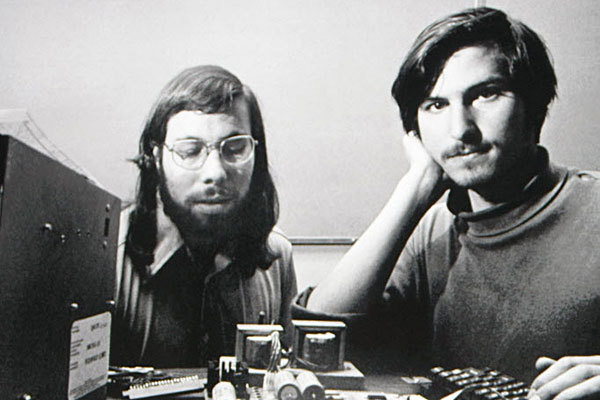

Wozniak y Steve Jobs se conocieron a través de un amigo mutuo en 1971.Woz siempre había tenido una atracción por la electrónica. debido a esto a Woz le gustaba "apadrinar" a otros chicos a los que les gustase este tema.
Al principio Wozniak construyó en papel lo que sería su primera computadora(Apple 1).Tras su exposición en el club informático Homebrew Computer Club y asombrar a los participantes, Jobs promovió el ordenador a distintos aficionados y tiendas. Este contenía una placa con CPU, memoria RAM y un chip de gráfixos capaz de mostrar solo texto debido al poco dinero que tenían.

Más tarde se les unieron distintos amigos, entre ellos Ronald Wayne, y encontraron a un financiador, Mike Markkula, creandose así Apple Computer, a través de un contrato firmado. El éxito fue tal que no pudieron dar abasto a tanta demanada. En total se vendieron más de 200 unidades.